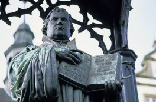

A Reforma Protestante foi a grande transformação religiosa da época moderna, pois rompeu a unidade do Cristianismo no Ocidente. No dia 31 de outubro de 1517, Martinho Lutero fixou na porta da igreja do Castelo as 95 teses que criticavam certas práticas da Igreja Católica. Este fato é considerado estopim da reforma que mudaria para sempre o cristianismo. Atualmente, luteranos de todo mundo comemoram neste dia o "Dia da Reforma Protestante".
Estátua de Martinho Lutero em Wittemnber, na Alemanha, segurando uma Bíblia nas mãos
Origem da Reforma Protestante
O processo de centralização monárquica que dominava a Europa desde o final da Idade Média, tornou tensa a relação entre reis e Igreja. A Igreja - possuidora de grandes extensões de terra - recebia tributos feudais controlados em Roma pelo Papa. Com o fortalecimento do Estado Nacional Absolutista, essa prática passou a ser questionada pelos monarcas que desejavam reter estes impostos no reino. Parte dos camponeses também estava descontente com a Igreja, pois eles também lhe deveriam pagar taxas, como o dízimo. Em toda Europa, mosteiros e bispados possuíam imensas propriedades e viviam às custas dos trabalhadores da cidade e dos campos. A Igreja condenava as práticas capitalistas nascentes, entre elas a "usura" - a cobrança de juros por empréstimos - considerada pecado; e defendia a comercialização a "justo preço", sem lucro abusivo. Esta doutrina estava em contra as novas práticas mercantilistas do fim da Idade Média e freava o investimento da burguesia mercantil e manufatureira. No entanto, a desmoralização do clero, que apesar de condenar a usura e desconfiar do lucro, veio com a prática do comércio de bens eclesiásticos. O clero fazia uso da sua autoridade para obter privilégios e a venda de cargos da Igreja, uma prática chamada de "simonia". Igualmente, muitos sacerdotes tinham esposas, apesar do celibato obrigatório, numa heresia conhecida como "nicolaísmo". O maior escândalo foi a venda indiscriminada de indulgências, isto é, a remissão dos pecados em troca de pagamento em dinheiro a religiosos.
A Reforma de Lutero
A Reforma Protestante foi iniciada por Martinho Lutero (1483-1546), monge agostiniano alemão, e professor da Universidade de Witenberg. Crítico, negava algumas práticas apregoadas pela Igreja. Em 1517, revoltado com a venda de indulgências realizada pelo dominicano João Tetzel, Lutero escreveu em documento com 95 pontos criticando a Igreja e o próprio papa. Estas 95 teses teriam sido pregadas na porta de uma igreja a fim de que seus alunos lessem e se preparassem para um debate em classe. No entanto, alguns estudantes resolveram imprimi-las e lê-las para a população, espalhando assim, as censuras à Igreja Católica. Em 1520, o papa Leão X redigiu uma bula condenando Lutero e exigindo sua retratação. Lutero queimou a bula em público o que agravou a situação. Já em 1521, o imperador Carlos V convocou uma assembleia, chamada "Dieta de Worms", na qual o monge foi considerado herege. No entanto, Lutero foi acolhido por parte da nobreza alemã, que simpatizava com suas ideias e refugiou-se no castelo de Wartburg. Ali, se dedicou à tradução da Bíblia do latim para o alemão, e a desenvolver os princípios da nova religião. Seguiram-se guerras religiosas que só foram concluídas em 1555, pela "Paz de Augsburgo". Este acordo determinava o princípio de que cada governante dentro do Sacro Império poderia escolher sua religião e a de seus súditos.
Calvinismo e Reforma Protestante
A revolta e os ideais de Lutero se espalharam pelo continente europeu. Em cada região, o Luteranismo assumiu características diferentes, pois muitos religiosos passaram a estudar os escritos de Lutero e propor a renovação da Igreja. Por outro lado, na França e na Holanda, os princípios de Lutero foram ampliados por João Calvino (1509-1564). Pertencente à burguesia e influenciado pelo Humanismo e pelas teses luteranas, Calvino converteu-se em ardente defensor das novas ideias. Escreveu a "Instituição da religião cristã", que veio a ser o catecismo dos calvinistas. Perseguido, refugiou-se em Genebra, na Suíça, onde a Reforma havia sido adotada. Dinamizou o movimento reformista através de novos princípios, completando e ampliando a doutrina luterana. Determinou que não houvesse nenhuma imagem nas igrejas, nem sacerdotes paramentados. A Bíblia era a base da religião, não sendo necessária sequer a existência de um clero regular. Para Calvino, a salvação não dependia dos fiéis e sim de Deus, que escolhe as pessoas que deverão ser salvas (doutrina da predestinação). O Calvinismo expandiu-se rapidamente por toda a Europa, mais do que o luteranismo. Atingiu os Países Baixos e a Dinamarca, além da Escócia, cujos seguidores foram chamados de presbiterianos; na França, huguenotes; e na Inglaterra, puritanos.
Contrarreforma ou Reforma Católica
Por muito tempo se ensinou que a Contrarreforma foi o movimento que surgiu na Europa em consequência da expansão do protestantismo. Atualmente, contudo, os historiadores preferem o termo Reforma Católica. Afinal, vários teólogos católicos como Thomas Morus e Erasmo de Roterdã já haviam escrito sobre a necessidade de mudar certos aspectos da Igreja, muito antes do próprio Lutero. Desta maneira, a Igreja Católica acelera a tomada de uma série de providências para conter as ideias protestantes. Uma delas foi apoiar a Companhia de Jesus, fundada por Inácio de Loyola, em 1534. Seus membros, conhecidos como jesuítas tinham total confiança do papa e buscavam combater o protestantismo por meio do ensino e expansão da fé católica. Concílio de Trento Em 1545 e 1563, realizou-se o Concílio de Trento, com representantes da Igreja Católica de toda a Europa. Igualmente estavam presentes membros da igreja luterana e da ortodoxa.
Vejamos as principais decisões:
-
O clero regular, deveria estudar nos Seminários, caso quisessem tornar-se padres.
-
Os párocos foram obrigados a morar em suas paróquias e dar atenção especial à pregação doutrinal.
-
Proibiu-se a venda de cargos religiosos.
-
Foi criado o “Index”, lista de livros proibidos pela Igreja, incluindo livros científicos de Galileu, Giordano Bruno, entre outros.